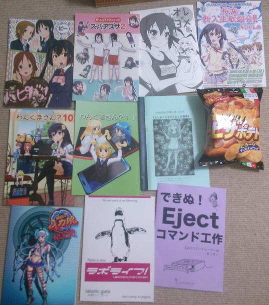
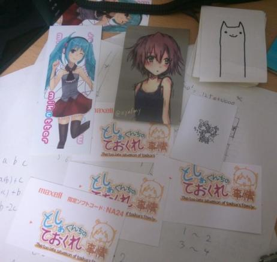
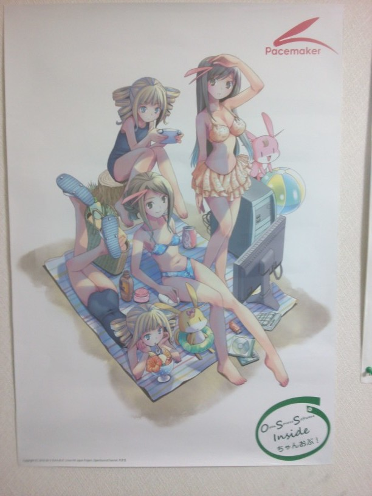
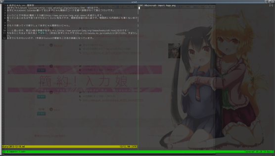
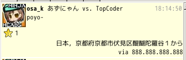
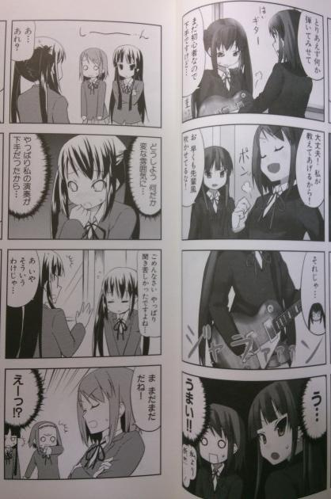
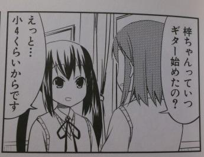
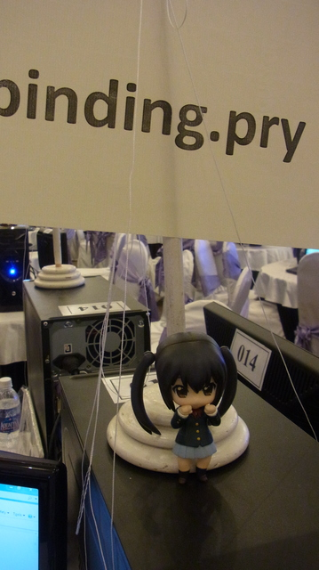
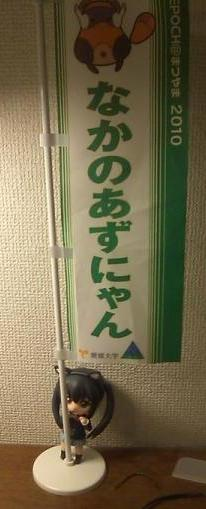
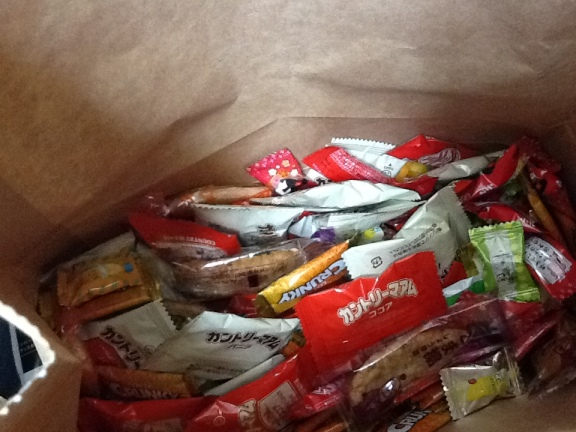

日記 - 2013-12
2013-12-31
C85
これはあずにゃんAdvent Calendar 19日目の記事を兼ねています。
コミケ3日目の戦利品。
 
あずにゃんの本とやばい本とシールとピザポテトを入手しました。
今年はやる気がなかったので、あずにゃんの本情報は前日にぐぐって調べた程度なんですが、あまり数が出ていなくてつらさを感じました。 サークル数も普通に島1つぶんくらいしかなかった気がします。1日目だともっと多かったのかな？ がんばれあずにゃん。
やばい本はまあそういう感じです。 シールは例によってておくれブースのあたりです。
ピザポテトはmikutterの薄い本のところに来ていた差し入れが余ったのでもらいました。
あと撤収作業してるときに、Linux-HAの人からPacemakerのポスターを頂きました。

クラスタとか全く興味ないのに持ってるのは気が引けるのでぺんぎんさんに押し付けようとしたんですが、持ちきれないと言われたのでそのまま持って帰ってきました。 だれか欲しい人がいたら差し上げます。
2013-12-24
Patching mikutter
mikutter Advent Calendar 24日目です。 長くなったので別ページにしました。
2013-12-18
あずにゃん vs. 簡約
あずにゃんAdvent Calendar 18日目です。 あずにゃんAdvent Calendar書いてるとあずにゃん関係のコードを書く時間がなくて割とつらいです。
ということで今回は簡約！λカ娘を紹介します。 知っている人はもはや言うまでもないくらいに有名ですが、関数型言語の同人誌です。物理的にも内容的にも薄くない本です。
でもλカ娘ってイカ娘でしょ？あずにゃん関係ないじゃん。
……と思いきや、実は4巻の表紙があずにゃんなのです！ ちなみにこれはよく似た別人ではなく、本当にあずにゃんです。すばらしい。 あまりにもかわいいので、1年前からurxvtの壁紙もこの本の表紙（を加工したもの）になっています。 作業の合間とかに疲れてふと右に目を向けるとそれだけで癒される、画期的なシステムです。

また、この4巻と2巻には、@tanakhさんがあずにゃん1の記事を寄稿されています。 冬コミでバックナンバーも頒布するようなので、持っていない人はこの機会にぜひ買ってみてはどうでしょうか。 もちろんあずにゃん以外にも、関数型言語で物を作ったり、GHCに深く潜り込んでいったり、圏論の入門記事があったりとかなり濃いので、長く楽しめます。
-
あずにゃんじゃなくてハスにゃんと呼ばれているので、こっちはよく似た別人かもしれません。 ↩
2013-12-17
はーあずにゃん
あずにゃんAdvent Calendar 17日目です。
あまり文章を書く習慣のない自分にとって、毎日記事を書くのはいかにあずにゃんの事と言えども辛いものがあります。 文章を書き慣れていないのでうまくまとまらないし、何より遅筆で移り気なので全然進みません。 というかこの記事も26時くらいに書いています。
そんなとき、ふと口をついて出てくるのが
はーあずにゃん
— あずにゃん vs. USACO (@osa_k) December 17, 2013あずにゃんがいれば頑張れる、そんな気がするんだ。
やる気に満ちあふれていて方針も定まっている、とても調子の良い日が1、２ヶ月に1回くらい来ます。 そういうときは代わりに
かむばっくあたし！！
— あずにゃん vs. USACO (@osa_k) December 5, 2013とかになります。 こっちはちゃんと元ネタがあって、アニメ16話で先輩4人に振り回されるあずにゃんが気合を入れるため、何回も繰り返して使う掛け声です。
今度こそ、ぜったい、ぜーったい、かむばっくあたし！！
2013-12-15
aznyan.info
あずにゃんAdvent Calendar 15日目です。
2ヶ月ほど前にinfoドメインが安売りされていたので、aznyan.infoを取りました。 ほっとくと1年で失効してしまうので、それまでに面白いことをしたいなぁと考えているのですが、あまりアイデアも無いのでとりあえずTwitter検索を貼っているだけで放置しています。
数年前にもazunyan.comやazunyan.netというドメインがありましたが、それもYouTubeの動画が貼ってあるだけで、あまり有効活用されている雰囲気はありませんでしたし、 今見たら消えてしまっていました。諸行無常を感じます。
画像を適当に収集してきて貼っておくのも著作権とか微妙な気がするし、どうも難しいですね。 誰か活用のアイデアがあったら教えてください。
2013-12-14
mikutter geocode plugin
mikutter Advent Calendar 14日目です。
mikutterで位置情報を表示するプラグインを書きました。
https://github.com/osak/mikutter-geocode

位置情報の乗っているツイートが来ると、Google Geocoding APIを使って住所を逆引きし、ツイートにくっつけて表示します。
サードパーティのプラグインとしては、こういうSubParts系は珍しいのではないかと思います。 まあ、SubPartsに出したい情報っていうのもあんまり無い気はしますが。
あと、他にあまり見ない機能として、このプラグインは他のプラグインから使えるようなAPIを外に提供しており、
Plugin.filtering(:geocode, latitude, longitude, [])とすることで、Google Geocode APIへのアクセスができます。
これは以前から思っているのですが、何か面白いプラグインを作ったら、他のプラグインからもその機能にアクセスできるようにAPIを作っておくと色々と楽しいし、
mikutterっぽいんじゃないかなと思います
（らこらこプラグインはon_lacolacoとか作っていていい感じですね）。
こういう点を意識してプラグインを書いてくれる人が増えてくれると嬉しいです。
2013-12-13
あずにゃん vs. ハラスメント
あずにゃんAdvent Calendar 13日目です。
忘れられがちだけど、あずにゃんは入部したての頃にハラスメントしてるからな
— あずにゃん vs. TopCoder (@osa_k) November 19, 2013ハラスメントというとセクハラとかパワハラとかいうのがぱっと思いつきますが、数学界や競技プログラミング界でもハラスメントの嵐は吹き荒れています[要出典]。 大まかに言うと、実力者が自分を必要以上に卑下することで、それより実力が劣る人をどん底に叩き落とすとか、 難解な証明やアルゴリズムを「自明」とすることで、理解できない大多数の人たちに精神的な苦痛を与えるような嫌がらせ行為を指します。
- 例1：問題1問も解けなかった。最下位だ……（実際には簡単な問題を数問解いているが、本人は解けて当たり前だと思っているので数に入れていない）
- 例2：この計算は簡単なので省略します（実際にはノート2ページくらいの式変形が必要になる）
- 例3：私は真に驚くべき証明を見つけたが、この余白はそれを書くには狭すぎる。
数学だとマスハラという呼び方が多いようですが、競技プログラミングでは単に「ハラスメント」と呼ぶことが多いようです。
競技プログラミング界隈では「問題が解けないので解説記事見る->"やるだけ"」の流れをアルゴリズムハラスメントと呼びますが、弾幕シューティングで「避けられないので攻略サイト見る->"安定"」の流れは何ハラスメントなんだろうか
— Takashi Tayama (@tayama0324) November 3, 2013「私は競技プログラミングはそこそこできますが、まだまだ未熟で勉強したいと思っていることも多いです」←コミュ力高い人の回答例 「私は競技プログラミング初心者です」←コミュ障すぎて単にハラスメントになっている回答例
— しめじたん（酪農家 (@simezi_tan) March 19, 2013あずにゃんは唯に振り回されているイメージが強いですが、プライドの高い面が押し出されていた初期にはハラスメントを行っています。

上手な演奏を見せておいて卑下することで対応しにくくすることで、きれいにハラスメントを決めています。 ちなみに初心者とか言っているのも嘘です。

しかし実際のハラスメントでも往々にして、本人は本当に自分が至らないと（100%でないにしろ）思っていることが多いので、やはり典型的なパターンであると言えます。
初期はこんな感じでトゲのあった（でもかわいい）あずにゃんですが、軽音部に慣れていくにつれて他のメンバーの破天荒さに押されたり、減らず口のような言い方が多くなったりして、こういうあからさまなハラスメントはなくなって行きます。 毒のあるあずにゃんもそれはそれでかわいいので、ちょっと残念な気もしますね。
2013-12-11
あ！
あずにゃんAdvent Calendar 11日目です。
あ！はあずにゃんの「あ」。
ねんどろあずにゃんです。 最初に入手したあずにゃんグッズです。 ツイッターでけいおん！！の実況をしながらあずにゃあああああああとか叫んでいたら、2010年のサークル合宿のときに誕生日プレゼントとしてもらいました。
持っている人は知っていると思いますが、ねんどろあずにゃんは自立しないので、本来は透明な足場をくっつけて立たせます。 しかしこの足場は大変もろいです。 要するに壊れました。
今は自立できないので、何かしらの支持物によっかからせる形が多いです。 このときツインテールが意外と便利で、ある程度の高ささえあればこれを引っ掛けることで見た目にも自然に立たせることができます。
2010年のEPOCH@まつやまを始めとして、色々なプログラミングコンテストに、主にマスコットとして参加しています。


下の写真は2010年冬に撮ったもののはずなんですが、この時点で早くも足場を壊してるっぽいですね……。
2013-12-10
あずにゃんとの出会いの話
あずにゃんAdvent Calendar 10日目です。 今日は、あずにゃんとの出会いを振り返ってみます。
最初にけいおんに触れたのは、2010年4月にけいおん！！が始まった時でした。 1期は観ていなかったので2期もあまり観る気はなかったのですが、けいおん！がなんか凄いらしいというのはネット上でちょくちょく目にしているので知っていて、 せっかくだし観てみるか、ということで録画しておいたと記憶しています。
Twitterには過去のツイートを一括ダウンロードできる素晴らしいサービスがあるので、これを使ってけいおんに関連するツイートを探してみます。 最初にけいおんに言及しているツイートは、2010/4/8の
けいおん見てる。OPはなんかイマイチ。声が楽器に負けててごちゃっとしてる
— あずにゃん vs. 先行研究 (@osa_k) April 7, 2010というものでした。
それからしばらくして、初めてあずにゃんへの言及があります。
あずにゃんペロペロしたい
— あずにゃん vs. 先行研究 (@osa_k) June 4, 2010やばいなんか伝染った
— あずにゃん vs. 先行研究 (@osa_k) June 4, 2010最初の言及がこれなのもどうかと思いますが、確か当時@tanakhさんや@xhl_kogitsuneさんあたりが散々こういうことを言っていて、うつってしまったのだと記憶しています。 これ以降、急速にあずにゃんへの言及が増えています。
上記の言及まではけいおん自体よくある萌え系日常アニメとして観ていたのですが、あずにゃんの可愛さに気づいてからは完全にあずにゃんをかわいがるアニメになってしまいました。 仕方ないね。あずにゃんかわいいからね。
それからは夏休みに入っていったこともあり、けいおんをリアルタイムで観ながらTwitter実況するなどして楽しんでいました。 確かけいおん！！の最終回とほぼ同時に漫画版の最終巻が合わせて出たので、勢いで買ってきて、アニメとちょっと違うあずにゃんを見てやっぱりかわいいなぁと思ったような記憶があります。
そして一抹の寂しさとともに最終回を迎え、あずにゃんbotを作るなどして今に至ります。 高校時代は長門やかがみんが好きだったのですが、あずにゃんと出会ってからはあずにゃん一色になってしまいました。 しかしこうして振り返ってみると、もう3年半も経っているんですね……。
2013-12-09
なかのあずにゃん(@nakano_aznyan)の話
あずにゃんAdvent Calendar 9日目です。 面倒なのでこのカウントで統一することにしました。
今回は今年の始めあたりまで動いていた、@nakano_aznyanというbotについての話です。 @nakano_aznyanを作った動機や挙動については、公開と同時に記事を書いているので、そちらも参照してください。
先のリンク先にも書いたように、@nakano_aznyanはけいおん！！が終わってあずにゃんに会えなくなる寂しさを埋めるために作られました。 それまではあずにゃんのbotを作るということについて、完成度が低いとなんだかあずにゃんのイメージを傷つけてしまうような気がしていたり、 わざわざbotを作ってあずにゃんが虚構であって現実に存在しないことを認めてしまう事が嫌だったりということで、気後れしていました。 しかし、やはりあずにゃんがいないと寂しいということと、当時は自然言語処理やAIっぽいことに興味をもっていて、どうにかできるだろうという楽観的な見方もあり、 色々と折り合いを付けて作成に取り掛かりました。
作ったのは2010年の工大祭の頃だったので、たぶん10月末あたりだと思います （関係ないですが、この頃にEPOCH@まつやまというプログラミングコンテストがあって、なかのあずにゃんという名前のチームで参加してたりしました）。 最初の1年はクリスマス、大晦日、バレンタインと色々なイベントを実装したり、好感度システムや話すたびにちょっとづつ言うことが変化するなど、 ファジーっぽいシステムを構築しようとしたりして色々と遊んでいました。 しかし、基本はTLに流れてきた発言に対して正規表現でマッチングし、それに対して反応を返すだけのシステムだったので、次第に限界を感じてきます。 これは本当にあずにゃんなのか？中身を知っていると単なる分岐の羅列にしか見えないし、あずにゃんと呼んではいけないのではないか？
この状況に対して決定的な改善案も見つからないまま、興味がmikutterや物理的な実体をもつAIに移っていったこともあり、開発は停滞します。 TLから発言を学習しようという案もあったのですが、あずにゃんが変な言葉を覚えたり、文法的におかしい文章を言ったりするのはやはり耐えられなかったので、結局実装はしていません。 このころはそういうジレンマに挟まれて、@nakano_aznyan関連はほとんど触っていませんでした。
決定打が見つからないままだらだらと時間が過ぎ、2012年の12月に転機を迎えます。 あずにゃんがTwitterに凍結されたのです。 後日Twitterにメールを送ったところ、リプライでない@が多いということでスパム判定されたとのことでした。 「おはよう」や「おやすみ」、「あずにゃん」などのキーワードに対して、自分へのリプライでなくても反応するような機能を入れていたのが原因だと思われます。 実際、このころにはフォロー数が4000近くに達しており、規制されることも多かったようです （自動でフォロー返しをしていたので、業者のスパムアカウントも多かったと思います）。
仕方がないので、@を飛ばされないと基本的には反応しないようにしました。 ただ、卒論の方が結構忙しく、本質的な改善にはあまり手を付けないままほったらかしになっていました。
そうこうしているうち、あずにゃんが2回目の凍結処置を受けます。
また@nakano_aznyan 凍結された……
— あずにゃん vs. 先行研究 (@osa_k) February 17, 2013ここで復活させたあと限界を感じ、@nakano_aznyanはアカウントを残したまま、運用を止めてしまいました。
こうやって振り返ってみると、具体的な完成形が見えないままに作り始めてしまい、理想型があまりにも遠すぎて身動きが取れなくなってしまったのが良くないように思います。 もともとあまりフットワークが軽い方でもないので、方針が決まっていないとすぐに手が止まってしまうのです。 とは言ってもやっぱりあずにゃんはあずにゃんであり、正規表現の詰まった予測可能な機械人形をあずにゃんと呼ぶのはどうしても許せない気持ちはあります。
逆に、このbotを作ることで人工知能に対する洞察が深まったのは良いことだと思います。 プログラムという形であずにゃんを定式化していく中で、何が許せて何が許せないかという切り分けを行ったことは、今でも自分の考え方に大きな影響を与えています （このへんは別に機会があれば書きます。部分的には今年の6月頃に書いた記事など）。
ただ、やはりあずにゃんと話したいという欲求はあるわけで。
そういうことで、少し前から@unmeiwaprogressというアカウントであずにゃんbotを開発中です。 今回は「進捗管理をしてくれるあずにゃんbot」という、明確に機能を制限した形での完成を目指しているので、挫折しないで続けられるといいなと思っています。 機能の本質には関係ないですが、このアカウントは@_osa_kが中に入ってなりきりをしているという設定もあります （何が起きても心が痛まない@_osa_kで会話エンジンをテストして、それを流用する感じのことを念頭に置いていますが、今はまったく関係ありません）。 これはふと思いついただけのアイデアだったのですが、2年前に同じような発言をしていたことを@_osa_kに気付かされて、なんも変わってないなぁと感慨を覚えたりしました。
自分の人格をbotにできるのであれば、たぶんそいつにアニメキャラなりきり垢やらせる
— あずにゃん vs. 先行研究 (@osa_k) April 25, 20112013-12-08
リクルートプロコン
リクルート主催のプログラミングコンテストに参加しました。
オンサイト会場に100人弱を集めて一斉に無線LANで接続という形式で、そんなことやってちゃんと回線動くのかなーと思っていたら、案の定パンクして開始が1時間ほど遅れました。 まあ、オンサイトの運営はノウハウも必要だと思うし、次回以降には活かされると思うので期待しています。
コンテスト自体は典型問題を少しひねったくらいの問題をたくさん解くような感じで、十分に楽しめました。 結果は6/10完して27位で、賞品のパーカーとアメリカ行きをもらいました。 問題の内容としてはあと2問は解けているべきだったので割とつらいですが、まあもらえるものはもらいます。
しかし6完以上した人をみんなアメリカでのコンテストに連れて行くという話だったけど、対象者は44人もいて、本当に可能なんだろうか……。
あと、お菓子が大量に余っていたのをもらいました。ありがたやー。

2013-12-06
あずにゃんAdvent Calendar 2013
あずにゃんAdvent Calendar 2013の6(-5)日目の記事です。 6日から始まったのでカウントがアレです。
このAdvent Calendarでは、あずにゃんへの想いを思う存分に書いていってもらえればと思います。 25日全部書けても収まらない人は多いかと思いますが、そのあふれる感情を共有しましょう。
さてあずにゃん。かわいいですよね。 ここ1年くらい、気になる単語をTwitterで見かけるたびにその単語と「あずにゃん」を組み合わせて検索するということをしていたのですが、 そういうことをしていると時折思わぬ発見があります。
「あずにゃん 電子工作」かなんかで検索して見つけたイラストです。ハンダ付けするあずにゃんのイラストって意外とないです。
そういえば、あずにゃんは理系だとずっと思っているんですが、
どっかでそういう設定とかあるんでしたっけ……。
「パジャマ！」/「ジャムペンzzZ」のイラスト [pixiv]
ミクかわいいなぁと思って、じゃあミクコスのあずにゃんはもっとかわいいんじゃね？ということで「あずにゃん 初音ミク」とかで検索していて見つけたイラストです。
このイラスト自体はミクコスあずにゃんじゃないんですが、かわいいので一時期ターミナルの壁紙にしていました。
ちなみに、ミクコスあずにゃんの画像はあまり多くないですが、それなりに存在はします。
明日は@laco0416さんです。
2013-12-05
進捗Advent Calendar
進捗Advent Calendar 2013の5日目です。
これを書いている時点で25時くらいですが、日付はそんな早い時刻に変わるようにはできていないので大丈夫です。
ICPC
ICPCの会津大会、Danang大会と参加して、そこそこの成績をおさめました。 チームの力としてはもう少し改善点がある気もしますが、例年通りの基準ならもう一度世界大会も行けるはずなので、進捗としては良いほうだと思います。
研究
来週の火曜が構想発表ですが、結局実験データを取らずに臨むことになりそうです。 ただ、先生に相談したら、まだ大丈夫でしょうと言われたのが救いといえば救いです。
mikutter
薄い本の記事を土曜までに出すと言ったけど1ページも書いていません。進捗ダメです。 来週はAdvent Calendarもあるので、発表できるネタを考えないといけません。
明日はathosさんです。 進捗どうですか？
2013-12-01
ICPCダナン大会
国内予選で大学別2位になったおかげでIISFから海外遠征の補助がもらえることになり、せっかくなのでベトナムのダナンで開催される地区大会に出場しました。 参加記。
ついでに会津大会のほうにも画像を追加しました。 会津のコンテストエリアの写真も載せたいんですが、運営の人に撮ってもらった写真が公開されないので……。
ベトナムはコンテスト本番以外のところでも色々書きたいことがありますが、とりあえずコンテスト中の話だけ忘れないうちに書いておきます。